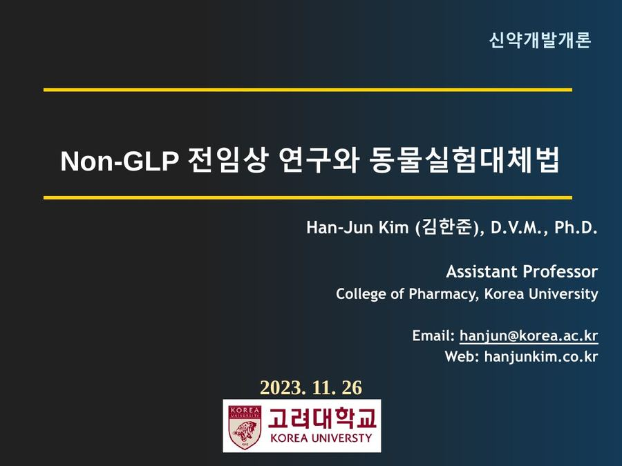
휴강 보강 녹화 강의. 앞부분은 Non-GLP(탐색적) 전임상연구 — 실험동물, 안전성 평가, 유효성 평가 사례. 뒷부분은 동물실험 대체법 — FDA 현대화법 2.0, 오가노이드, Organ-on-a-chip(간 칩 연구)이야.
마지막 “Questions?”(53)는 내용이 없어 뺐어.
| 파트 | 슬라이드 | 이 노트 |
|---|---|---|
| 전임상 개요 · 탐색적 vs 규제적 | 2~8 | 2~4쪽 |
| 실험동물 · 비교생물학 | 9~14 | 5~8쪽 |
| 1단계 안전성 (생체적합성·독성) | 15~21 | 9~12쪽 |
| 2단계 유효성 · 질환모델 사례 | 22~32 | 13~18쪽 |
| 동물실험 대체법 · FDA 현대화법 2.0 | 33~43 | 19~24쪽 |
| 간 칩(Liver-on-a-chip) 연구 | 44~52 | 25~27쪽 |
12주차와 연결: 12주차에 본
기말탐색적 vs 규제적, FDA 현대화법 2.0(동물실험 의무 폐지가 아니라 선택), 오가노이드 vs Organ-on-a-chip 정의가 1순위.
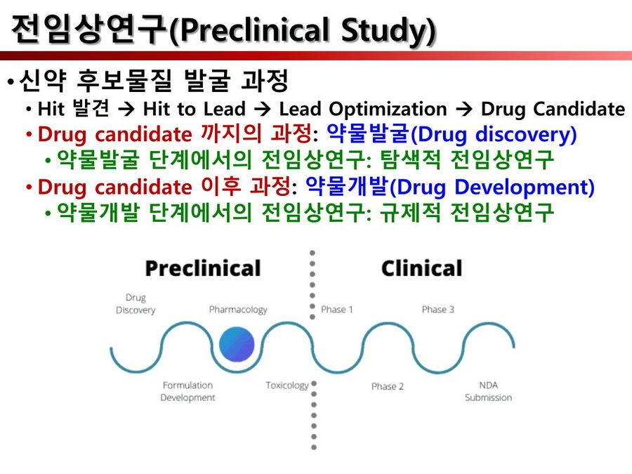
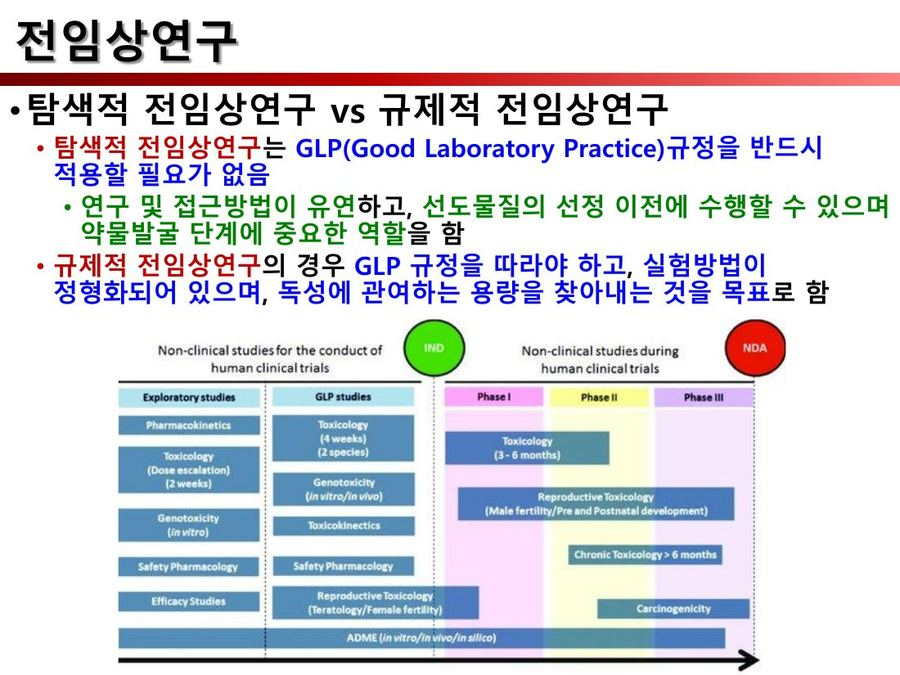
전임상연구는 Drug Candidate 선정을 경계로 나뉘어. 그 전(약물발굴)은 탐색적 전임상으로 GLP가 필수가 아니고, 그 후(약물개발)는 규제적 전임상으로 GLP를 따르며 독성 용량을 찾아.
2 Chapter 5. 전임상연구: 독성연구 & 유효성평가
3 신약 후보물질 발굴 과정: Hit 발견 → Hit to Lead → Lead Optimization → Drug Candidate
6 탐색적 전임상: GLP 규정을 반드시 적용할 필요 없음 · 유연 · 선도물질 선정 이전에도 수행 · 약물발굴에 중요
규제적 전임상: GLP 규정 준수 · 실험방법 정형화 · 독성에 관여하는 용량을 찾는 것이 목표
| 탐색적 (Non-GLP) | 규제적 (GLP) | |
|---|---|---|
| 시점 | 후보물질 이전 | 후보물질 이후 |
| 단계 | 약물발굴 | 약물개발 |
| GLP | 필수 아님 | 필수 |
| 방법 | 유연 | 정형화 |
| 목표 | 후보 탐색 | 독성 용량 규명 |
이번 강의 제목의 “Non-GLP 전임상” = 탐색적 전임상이야.
시험 포인트12주차와 같은 내용이 또 나왔어.
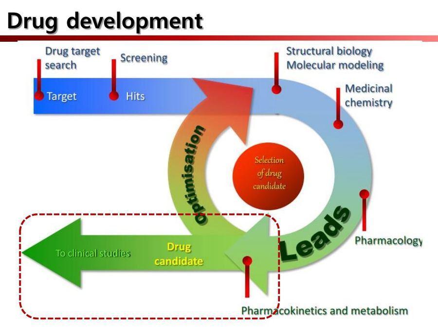
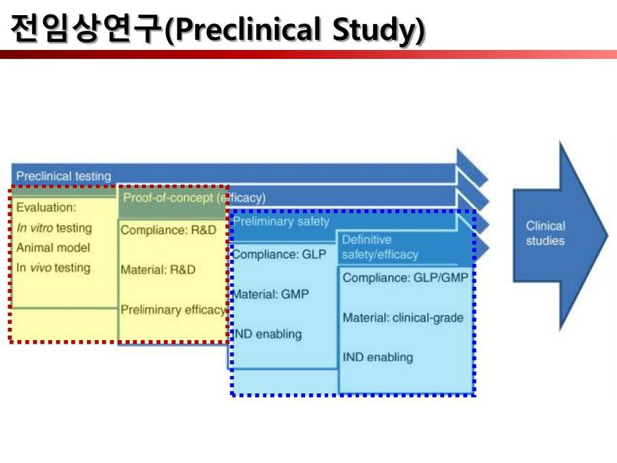
신약개발 순환(Target → Hits → Leads → 최적화 → Drug candidate) 중 후보물질 이후 임상으로 가는 구간이 전임상이야. 전임상은 평가 → 개념증명(PoC) → 예비 안전성 → 확정 안전성/효능 순으로 진행돼 IND로 이어져.
4 Drug development: Drug target search → Screening → Hits → 구조생물학·분자모델링 → 의약화학 → Leads → Optimisation → Selection of drug candidate → Pharmacology · PK/대사 → To clinical studies (빨간 점선 = 이번 범위)
5 Preclinical testing 단계
5번 그림 읽기 — 왼쪽(노란 점선)은 R&D 수준(탐색적), 오른쪽(파란 점선)은 GLP/GMP 수준(규제적)이야. 뒤로 갈수록 규제 수준과 재료 등급이 올라가.
연결GLP = 시험 관리기준, GMP = 제조 관리기준. 전임상 후반은 둘 다 요구돼.
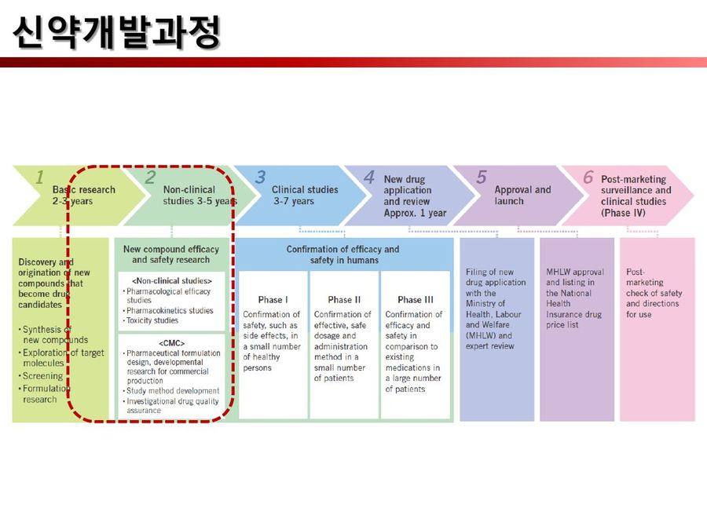
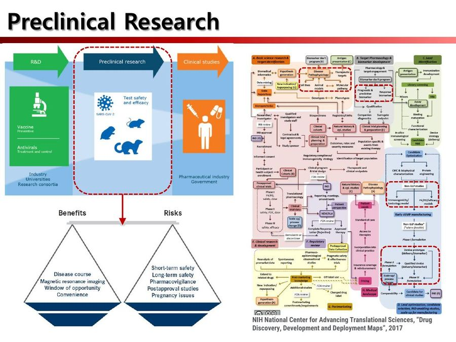
신약개발 6단계 중 비임상(전임상)은 3~5년. 신약 후보의 효능·안전성 연구, 약리·약동·독성 연구, 제형·생산(CMC)이 이 단계에서 이뤄져. 전임상은 이익(질병 경과·영상·치료 기회)과 위험(단기·장기 안전성·임신 등)을 저울질하는 단계야.
7 신약개발과정 (6단계)
8 Preclinical Research: R&D → Preclinical research(안전성·효능 시험) → Clinical studies. 아래는 이익 vs 위험 저울과 NIH NCATS 신약개발 지도(2017).
빨간 점선(2단계)이 이번 강의 범위야. 기간 숫자를 기억해 둬.
| 단계 | 기간 |
|---|---|
| 기초연구 | 2~3년 |
| 비임상(전임상) | 3~5년 |
| 임상 | 3~7년 |
| 허가 신청·심사 | 약 1년 |
시험 포인트비임상에서 하는 것 =
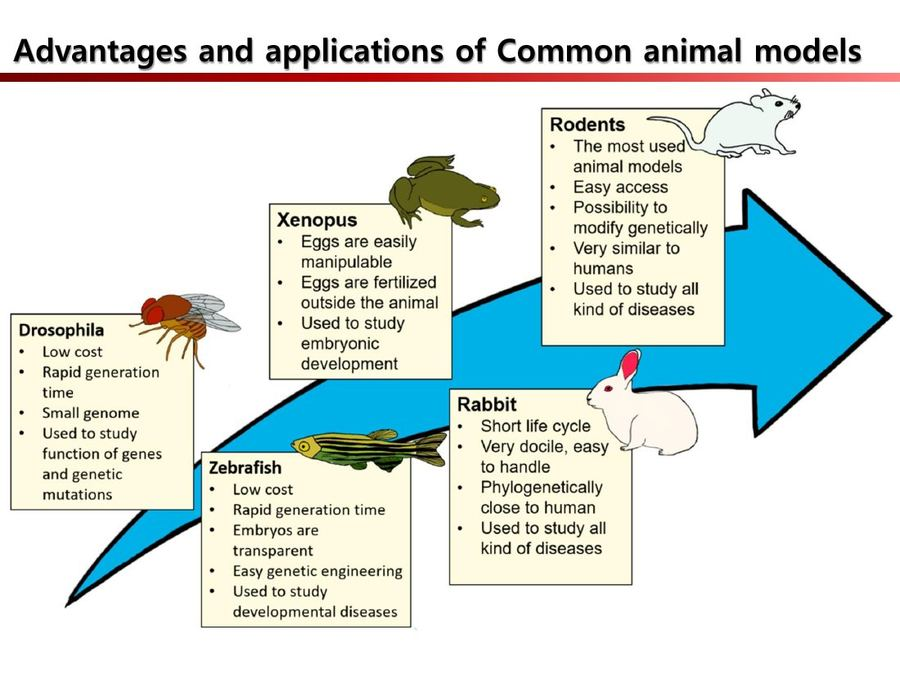
실험동물마다 장점이 달라. 설치류는 가장 많이 쓰이고 유전자 조작이 쉬우며 사람과 매우 비슷해 모든 질병 연구에 써. 토끼는 다루기 쉽고, 제브라피시·초파리는 싸고 세대가 짧아 발생·유전 연구에 좋아.
| 동물 | 장점 · 용도 |
|---|---|
| 설치류(Rodents) | 가장 많이 쓰임 · 구하기 쉬움 · 유전자 조작 가능 · 사람과 매우 비슷 · 모든 질병 연구 |
| 토끼(Rabbit) | 짧은 수명 주기 · 온순해 다루기 쉬움 · 계통적으로 가까움 · 모든 질병 연구 |
| 제노푸스(Xenopus) | 알 조작 쉬움 · 체외수정 · 배아 발생 연구 |
| 제브라피시 | 저렴 · 세대 짧음 · 배아 투명 · 유전자 조작 쉬움 · 발생 질환 연구 |
| 초파리(Drosophila) | 저렴 · 세대 짧음 · 작은 게놈 · 유전자 기능·돌연변이 연구 |
12주차 “쥐를 주로 쓰는 이유(비용·관리·번식·유전자 조작)”와 같은 흐름이야.
질병 모델로는 설치류·토끼, 발생·유전 연구로는 제브라피시·제노푸스·초파리로 나눠 기억하면 쉬워.
시험 포인트“가장 많이 쓰이는 실험동물 =
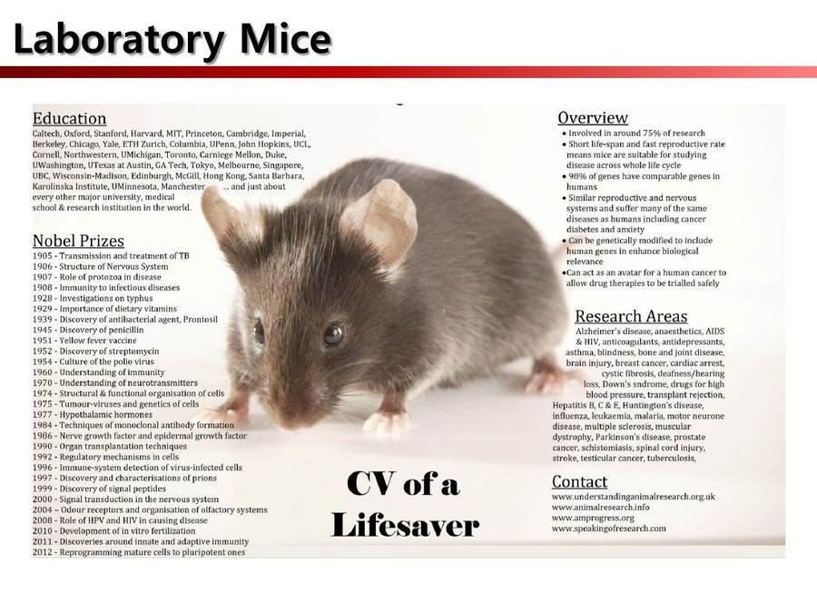
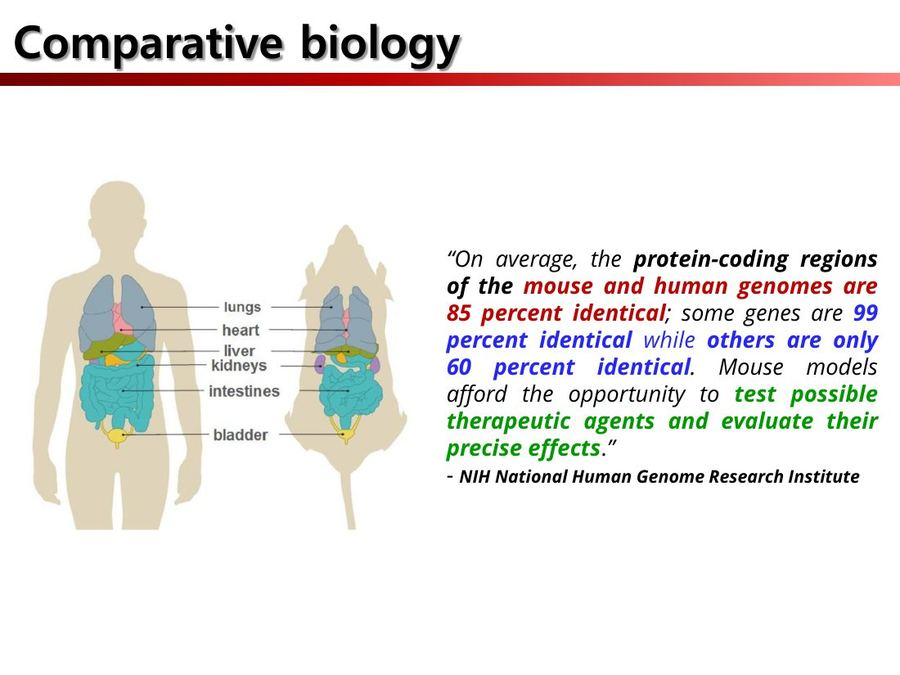
생쥐는 전체 연구의 약 75%에 쓰이는 “생명의 은인”이야. NIH에 따르면 생쥐와 사람 게놈의 단백질 코딩 영역은 평균 85% 동일(유전자에 따라 99%~60%)해서, 치료제 후보의 효과를 시험하기 좋아.
10 Laboratory Mice — “CV of a Lifesaver”
11 Comparative biology (NIH NHGRI, 2010)
“평균적으로 생쥐와 사람 게놈의 단백질 코딩 영역은 85% 동일하다. 어떤 유전자는 99%, 어떤 것은 60%만 같다. 생쥐 모델은 치료제 후보를 시험하고 효과를 평가할 기회를 준다.”
숫자 정리 — 헷갈리지 않게 출처별로 기억해:
| 숫자 | 뜻 |
|---|---|
| 85% | 생쥐-사람 단백질 코딩 영역 평균 동일성(NIH) |
| 99% / 60% | 유전자에 따라 최고 / 최저 |
| ~75% | 생쥐가 쓰이는 연구 비율 |
| 99% / 81% | (12주차) 침팬지 / 쥐 유전적 유사성 |
주의12주차 “쥐 81%”와 이번 “생쥐 85%”는 출처·기준이 달라. 문제에 나온 기준을 그대로 따라가.
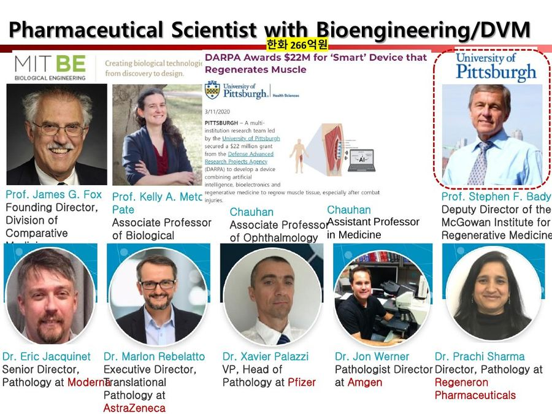
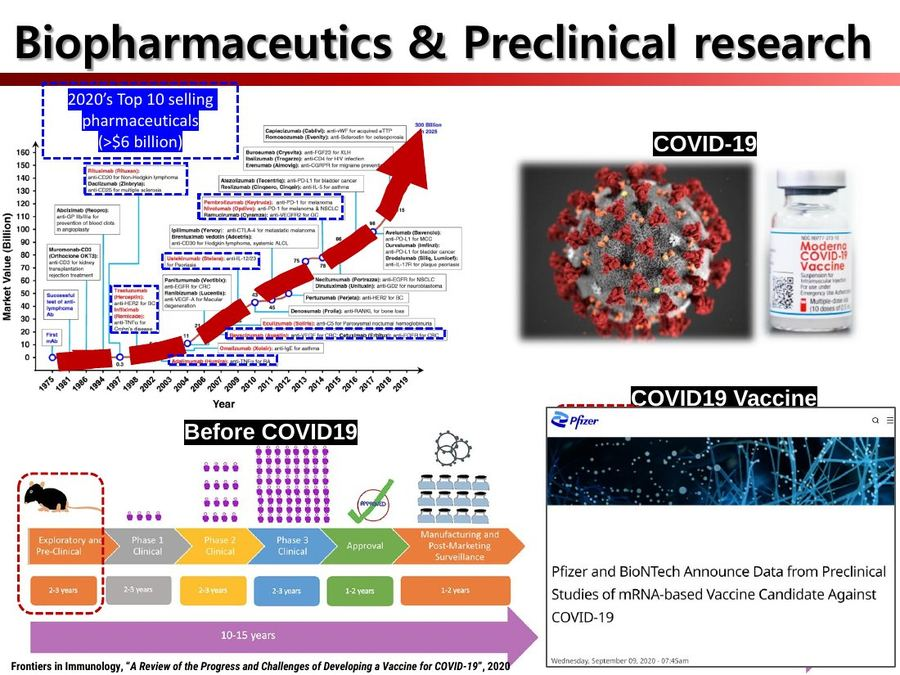
MIT·피츠버그대 등에서 수의사·생명공학 연구자가 비교의학·재생의학을 이끌고, 모더나·화이자·암젠 등 제약사의 병리(전임상) 책임자도 맡고 있어. 바이오의약품 매출이 급성장했고, COVID-19 백신은 전임상 데이터로 빠르게 개발됐어.
12 수의사(DVM)·생명공학 배경 연구자 예시
13 2020년 매출 상위 10개 의약품(60억 달러 이상) 중 바이오의약품 급증 · COVID-19 이전 백신 개발은 10~15년 · 화이자·바이오엔텍 mRNA 백신 전임상 결과 발표
교수님(수의사, D.V.M.)이 이 슬라이드를 넣은 이유:
COVID-19 이전에는 백신 개발에 보통 10~15년이 걸렸어(13번 그림). COVID-19 백신은 전임상 결과를 빠르게 발표하며 이 기간을 크게 줄였어.
참고사례 슬라이드라 세부 이름·금액보다 “전임상 = 동물 병리 평가가 핵심” 흐름을 기억해.
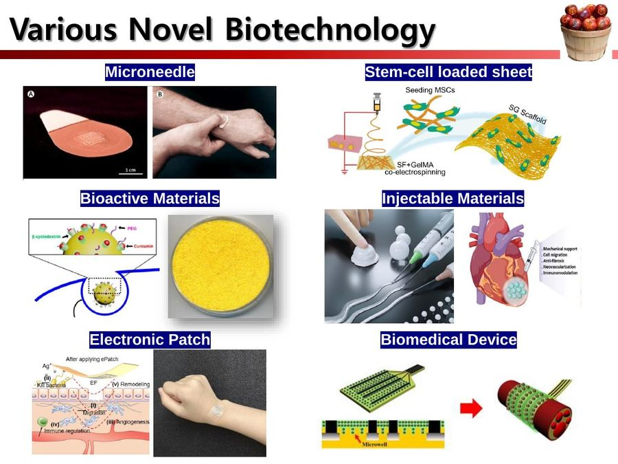
요즘 전임상 대상은 약물만이 아니야. 마이크로니들, 줄기세포 시트, 생리활성 소재, 주사형 소재, 전자 패치, 의료기기 같은 신기술도 같은 전임상 평가(안전성 → 유효성)를 거쳐.
이 여섯 가지가 뒤의 유효성 사례(24~31)에 하나씩 다시 나와. 예: 전자 패치 → 상처 치유, 신경 전극 → 신경병증 통증, 마이크로니들 → 지혈, 줄기세포 시트 → 힘줄 재생.
흐름신기술도 약과 똑같이
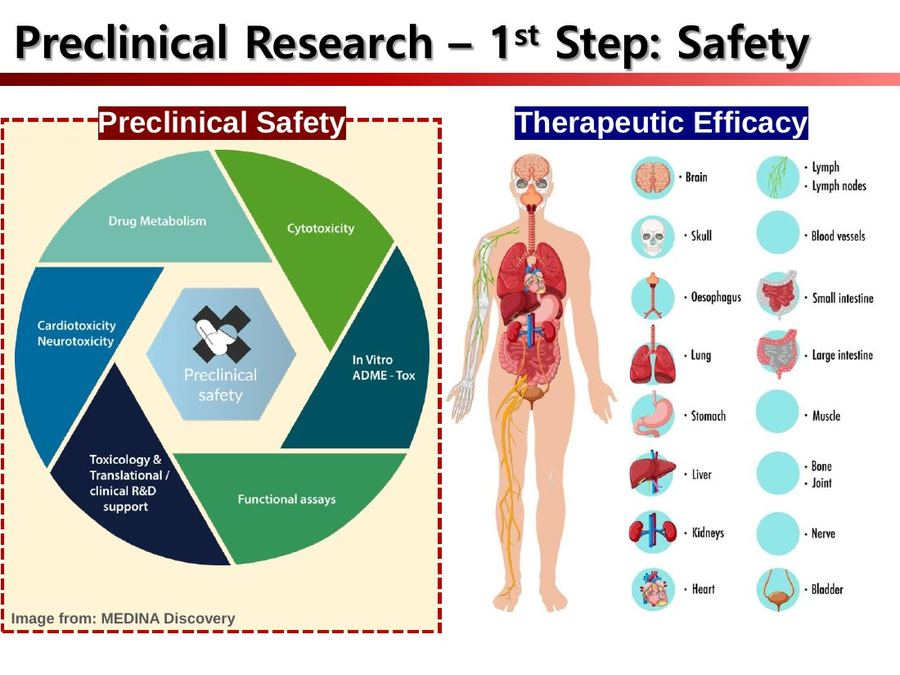
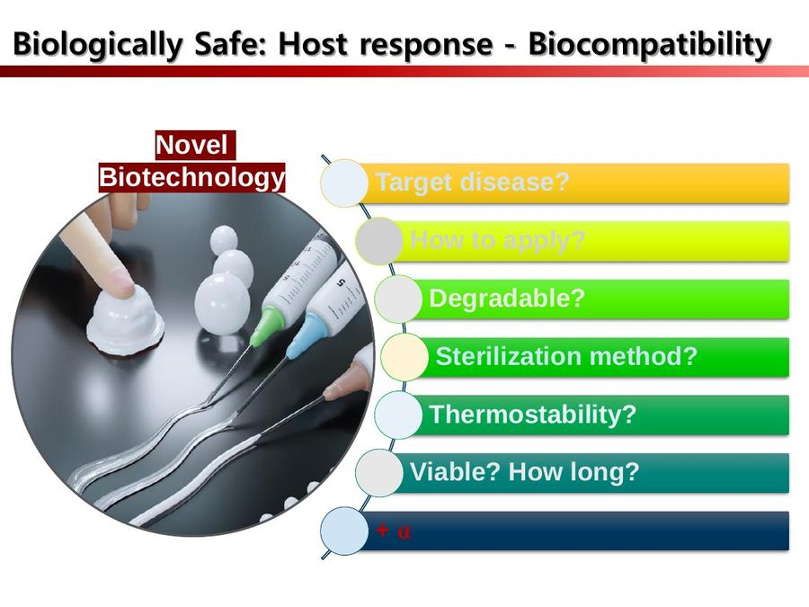
전임상은 1단계 안전성 → 2단계 유효성 순서야. 신기술은 먼저 몸이 받아들이는지(생체적합성, 숙주 반응)를 봐야 하고, 이를 위해 대상 질환·적용 방법·분해성·멸균법·열안정성·생존 기간 등을 따져. 평가 항목은 ISO 10993-1 표로 정해져 있어.
15 Preclinical Research – 1st Step: Safety — 전임상 안전성(약물대사·세포독성·in vitro ADME-Tox·기능 평가·독성/중개·심장/신경독성) 다음에 치료 효능
16 Biologically Safe: Host response – Biocompatibility (신기술에 대한 질문)
17 ISO 10993-1 부록 A — 의료기기 분류(접촉 부위·접촉 기간)별 생물학적 평가 항목(세포독성·감작·자극·급성/아급성/만성 독성·이식·혈액적합성·유전독성·발암성·생식독성·분해 등)
순서가 핵심: 안전하지 않으면 효능을 볼 의미가 없어서
생체적합성(biocompatibility) = 몸에 넣었을 때 해로운 숙주 반응(염증·면역 반응 등) 없이 받아들여지는 성질.
ISO 10993-1 표는 “얼마나 오래, 어디에 닿느냐”에 따라 필요한 시험이 늘어나는 구조야. 오래·깊이 닿을수록 시험 항목이 많아져.
시험 포인트전임상 순서 =
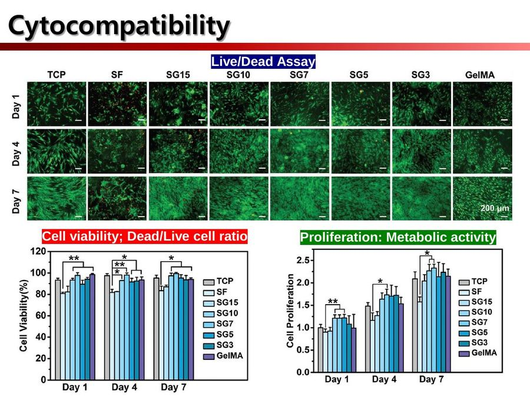
동물에 넣기 전에 세포 수준(in vitro)에서 먼저 안전한지 봐. Live/Dead 염색으로 살아 있는 세포(초록)를 보고, 세포 생존율과 대사 활성 기반 증식을 1·4·7일에 측정해.
세포적합성 시험 세 가지:
| 시험 | 보는 것 |
|---|---|
| Live/Dead | 살아 있는/죽은 세포를 눈으로 |
| Viability | 생존 비율(%) |
| Proliferation | 대사 활성 → 잘 자라는지 |
TCP(세포배양 플라스틱)를 대조군으로 두고 새 소재가 비슷하거나 더 나은지 봐.
흐름in vitro(세포적합성) → in vivo(동물 생체적합성) 순으로 안전성을 확인해.
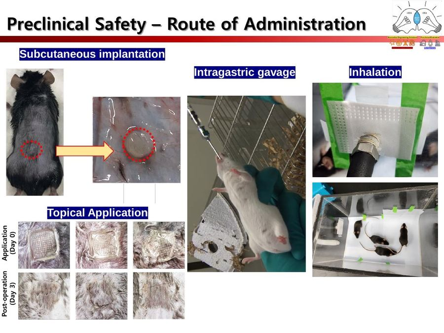
안전성 시험은 실제 쓰일 경로로 투여해. 피하 이식(subcutaneous implantation), 피부 국소 적용(topical), 위관 투여(intragastric gavage, 경구), 흡입(inhalation)이 대표적이야.
11주차 ADME의 흡수(A)와 연결돼. 투여 경로에 따라 몸에 들어가는 방식과 노출이 달라서, 안전성도 그 경로로 봐야 해.
| 경로 | 사람에서 대응 |
|---|---|
| 위관 투여 | 경구약 |
| 흡입 | 흡입제 |
| 국소 적용 | 피부 패치·연고 |
| 피하 이식 | 이식형 소재·기기 |
시험 포인트
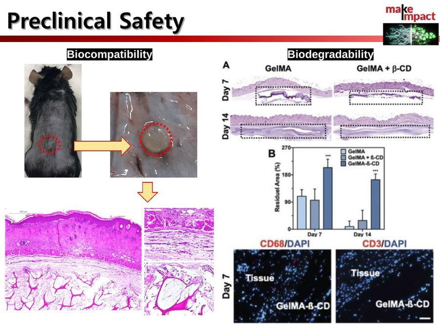
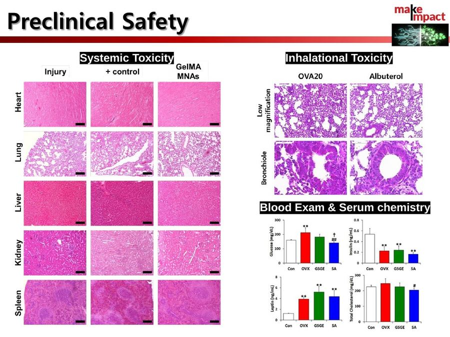
동물에서는 생체적합성(이식 부위 염증세포 CD68·CD3), 생분해성(시간에 따라 남은 면적), 전신 독성(심장·폐·간·신장·비장 조직), 흡입 독성(폐 조직), 혈액·혈청 화학 검사로 안전성을 확인해.
20
21
| 평가 | 무엇으로 보나 |
|---|---|
| 생체적합성 | 이식 부위 염증세포(CD68 대식세포, CD3 T세포) |
| 생분해성 | 시간에 따라 남은 소재 면적 |
| 전신 독성 | 주요 장기 조직검사(H&E) |
| 흡입 독성 | 폐 조직 |
| 혈액·혈청 | 혈액 수치 변화 |
12주차 GLP 흐름의 “부검 및 혈액검사”가 바로 이런 평가야.
시험 포인트안전성 =
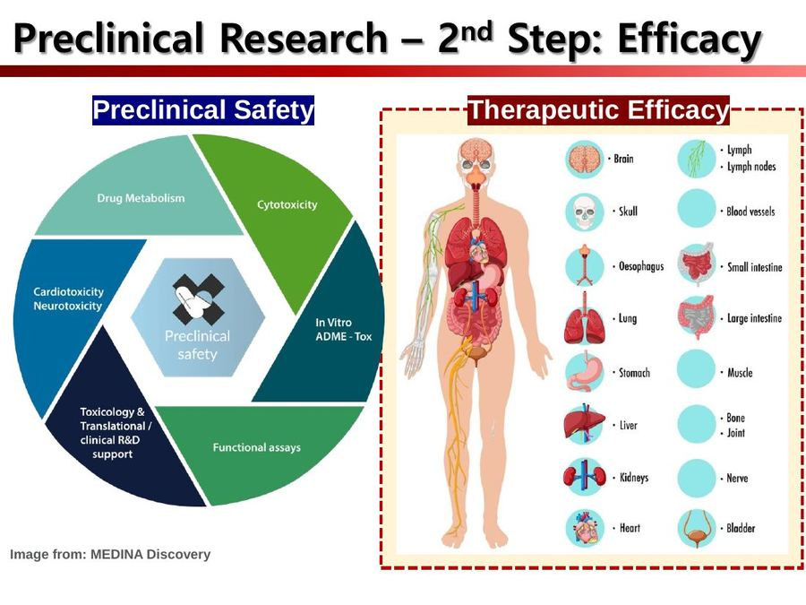
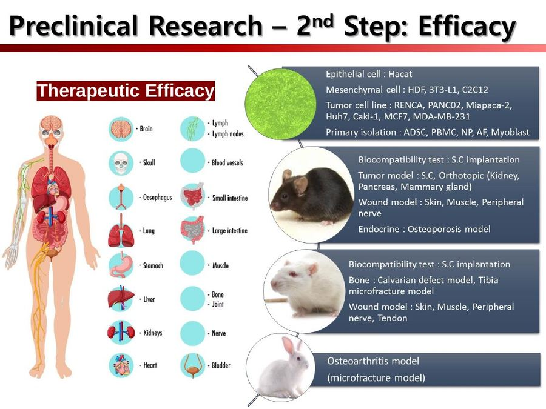
안전성이 확인되면 2단계 치료 효능을 봐. 표적 장기(뇌·폐·간·피부·뼈 등)에 맞는 세포(in vitro)와 동물 질환 모델(in vivo)로 평가해. 생쥐는 종양·상처·골다공증, 랫드는 뼈·상처·힘줄, 토끼는 골관절염 모델에 써.
22 전임상 안전성 다음 단계 = Therapeutic Efficacy(뇌·두개골·식도·폐·위·간·신장·심장·림프·혈관·장·근육·뼈·신경·방광 등)
23 효능 평가에 쓰는 모델
동물 크기에 따라 모델이 달라: 작은 생쥐는 종양·피부, 조금 큰 랫드는 뼈·힘줄, 관절이 큰 토끼는 골관절염.
이어지는 사례(24~31)는 모두 이 구조야:
시험 포인트골관절염 모델 =
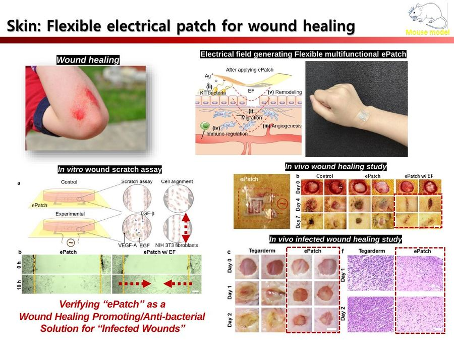
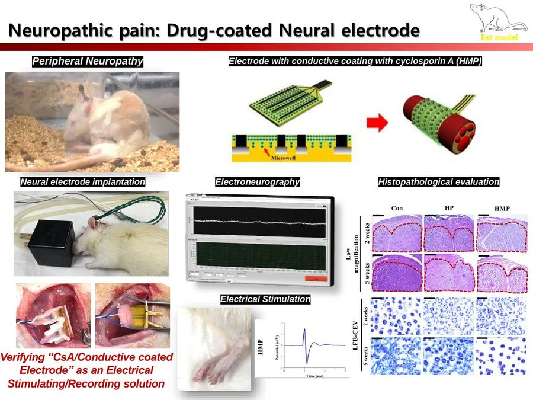
전기장을 내는 유연 패치(ePatch)는 in vitro 상처 긁기 시험과 생쥐 상처·감염 상처 모델로 상처 치유·항균 효과를 검증했어. 사이클로스포린A(CsA) 전도성 코팅 신경 전극은 랫드 말초신경병증 모델에서 전기 자극·기록과 조직병리로 검증했어.
24 Skin: Flexible electrical patch for wound healing (생쥐 모델, Biomaterials 2022)
25 Neuropathic pain: Drug-coated Neural electrode (랫드 모델)
두 사례 모두 의료기기형 신기술이야(14쪽 전자 패치·의료기기).
| 신기술 | 질환 | 동물 |
|---|---|---|
| ePatch | (감염) 상처 | 생쥐 |
| CsA 코팅 전극 | 신경병증 통증 | 랫드 |
흐름in vitro로 기전 확인 → 동물 모델로 효과 → 조직병리로 확인.
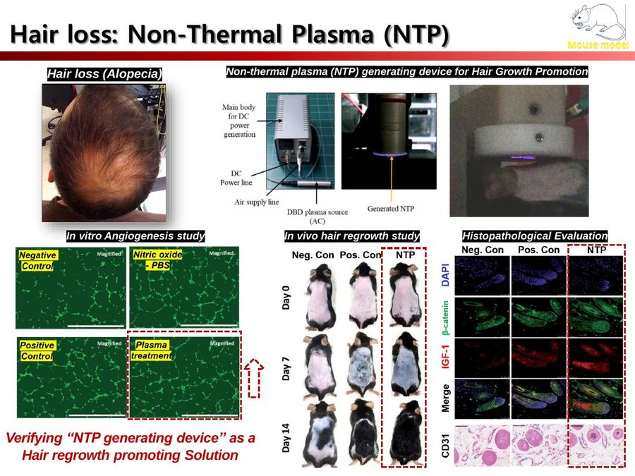
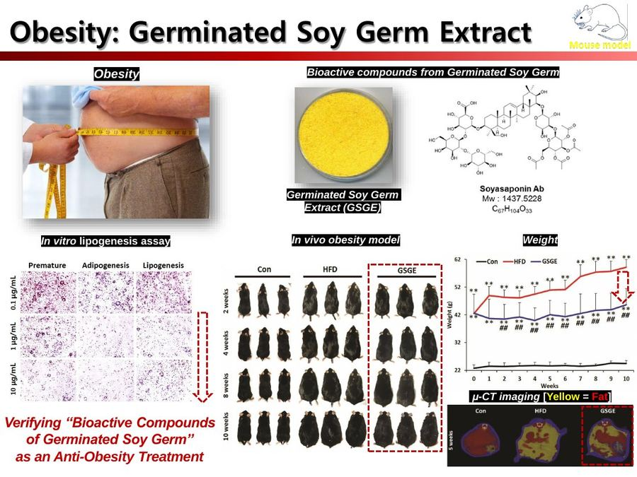
비열 플라즈마(NTP) 장치는 혈관신생 시험과 생쥐 모발 재생·조직병리로 탈모 치료 가능성을 검증했어. 발아콩배아 추출물(GSGE)은 지방 생성 억제 시험과 생쥐 비만 모델(체중·μ-CT 지방 영상)로 항비만 효과를 검증했어.
26 Hair loss: Non-Thermal Plasma (NTP) (생쥐, RSC Advances 2021)
27 Obesity: Germinated Soy Germ Extract (생쥐)
장치(NTP)와 천연물(GSGE)도 같은 전임상 틀로 평가해. 천연물은 3주차 천연물신약과 연결돼.
| 신기술 | 질환 | 동물 · 핵심 지표 |
|---|---|---|
| NTP 장치 | 탈모 | 생쥐 · 모발 재생 |
| GSGE | 비만 | 생쥐 · 체중·지방(μ-CT) |
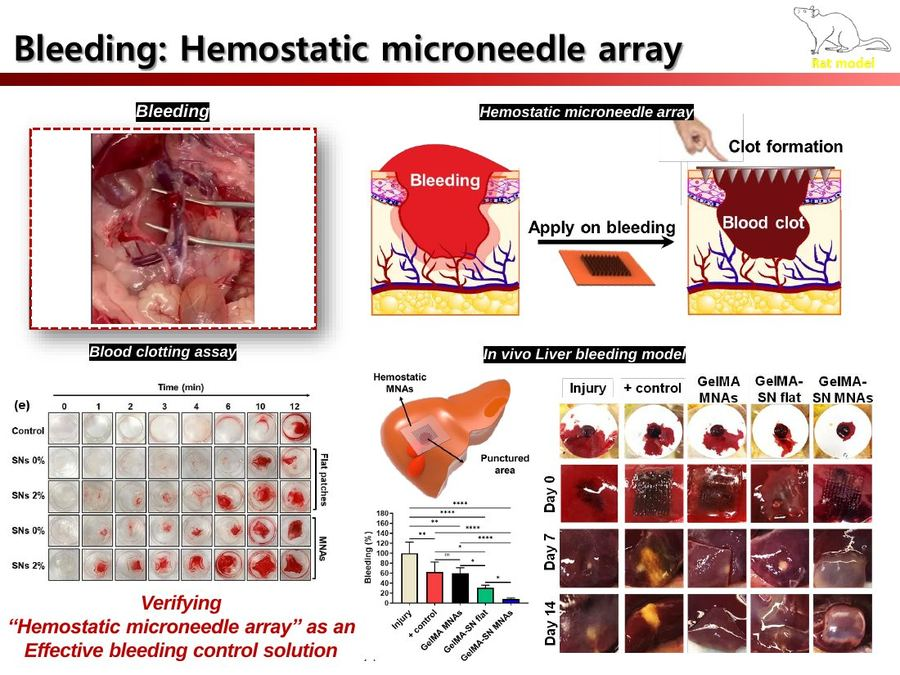
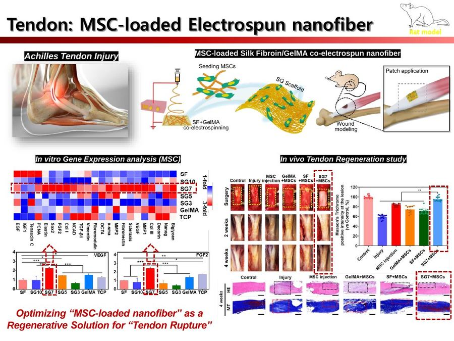
지혈 마이크로니들 배열은 혈액 응고 시험과 랫드 간 출혈 모델로 출혈 조절 효과를 검증했어. 줄기세포(MSC)를 실은 실크/GelMA 나노섬유는 유전자 발현 분석과 랫드 아킬레스건 재생 모델로 힘줄 파열 재생 솔루션을 최적화했어.
28 Bleeding: Hemostatic microneedle array (랫드)
29 Tendon: MSC-loaded Electrospun nanofiber (랫드, Small 2022)
| 신기술 | 질환 | 동물 |
|---|---|---|
| 지혈 마이크로니들 | 출혈 | 랫드(간 출혈) |
| MSC 나노섬유 | 힘줄 파열 | 랫드(아킬레스건) |
23쪽 표와 맞춰 봐: 힘줄·상처는 랫드 모델이야.
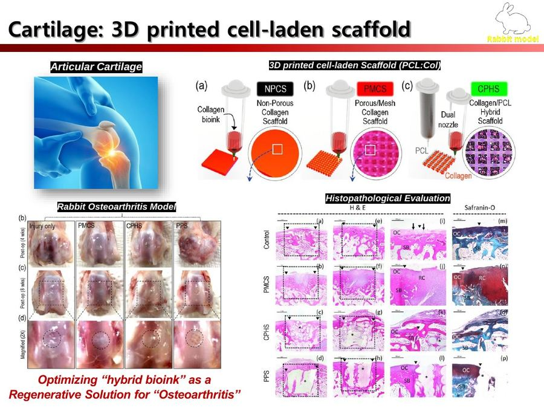
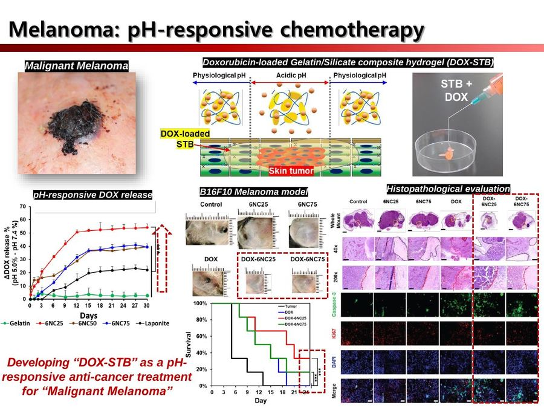
세포를 담은 3D 프린팅 지지체(PCL·콜라겐)는 토끼 골관절염 모델과 조직병리로 연골 재생을 최적화했어. 독소루비신을 담은 젤라틴/실리케이트 하이드로겔(DOX-STB)은 산성(종양) 환경에서 약을 더 내보내는 pH 반응형으로, 생쥐 흑색종 모델에서 효과를 확인했어.
30 Cartilage: 3D printed cell-laden scaffold (토끼)
31 Melanoma: pH-responsive chemotherapy (생쥐)
pH 반응형이 핵심: 종양 주변은 산성이라, 산성에서 약을 더 내놓으면 종양에 집중되고 정상 조직 노출은 줄어(약물전달 설계 = 분포(D)와 연결).
| 신기술 | 질환 | 동물 |
|---|---|---|
| 3D 지지체 | 골관절염 | 토끼 |
| DOX-STB | 흑색종 | 생쥐(B16F10) |
시험 포인트골관절염 =
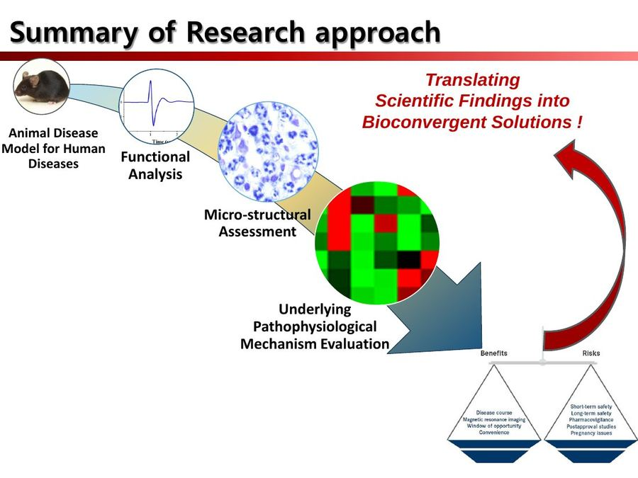
전임상 유효성 연구는 동물 질환 모델 → 기능 분석 → 미세구조 평가 → 병태생리 기전 평가로 이어지고, 이 결과를 다시 신기술(바이오융합 솔루션)로 되돌려 개선해. 그 과정 내내 이익과 위험을 저울질해.
→ “Translating Scientific Findings into Bioconvergent Solutions!” (과학적 발견을 바이오융합 솔루션으로)
아래: 이익(질병 경과·영상·치료 기회·편의) vs 위험(단기·장기 안전성·약물감시·시판 후·임신)
24~31쪽 사례가 모두 이 4단계를 따랐어. 예: ePatch → 상처 모델(1) → 치유 속도(2) → 조직 염색(3) → 기전(4).
흐름여기까지가 Non-GLP 전임상. 다음부터는 동물실험의 한계와 대체법이야.
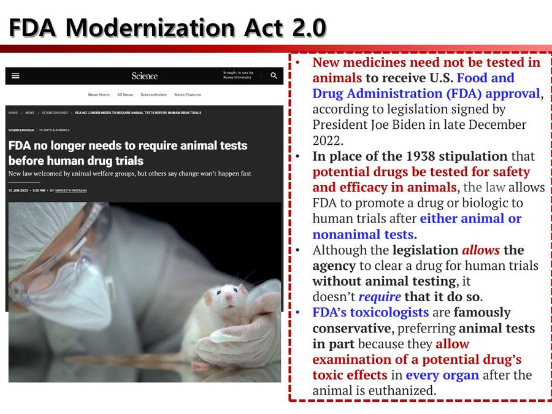
2022년 12월 말 서명된 법으로, 신약이 FDA 승인을 받기 위해 반드시 동물실험을 할 필요는 없게 됐어. 1938년부터의 “동물에서 안전성·효능 시험” 규정 대신, 동물 또는 비동물 시험 뒤 임상으로 갈 수 있어. 다만 허용일 뿐 요구는 아니고, FDA 독성학자들은 여전히 동물시험을 선호해.
1938년 = 2주차에 본 FD&C법(엘릭서 설파닐아마이드 사건 → 안전성 입증 의무)과 같은 해야. 그때부터 이어진 동물시험 규정을 바꾼 거야.
| 맞는 것 | 틀린 보기 |
|---|---|
| 동물 또는 비동물 시험 허용 | 동물실험 금지 ✗ |
| 허용(allow) · 요구 아님 | 비동물 시험 의무화 ✗ |
시험 포인트
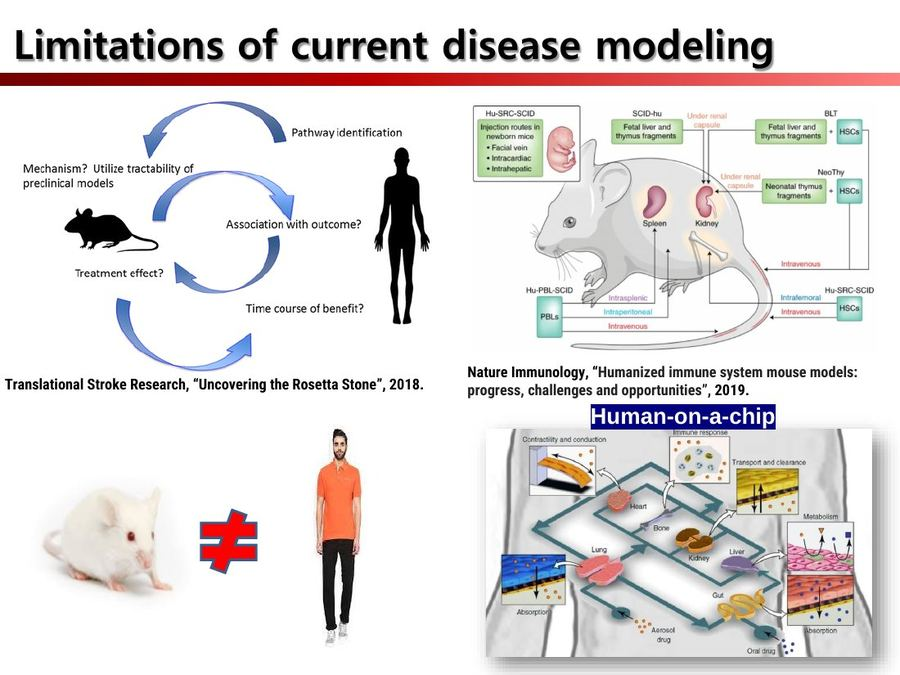
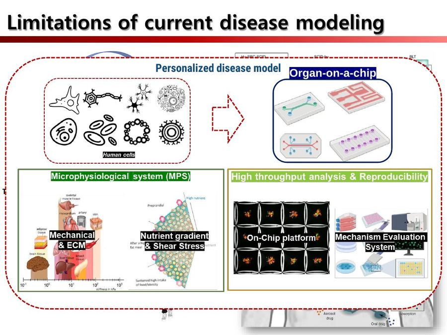
동물 모델은 기전 연구에 유용하지만 생쥐 ≠ 사람이라 결과가 사람에게 그대로 옮겨지지 않아. 인간화 면역 생쥐도 한계가 있어서, 사람 세포로 만든 개인 맞춤 질환 모델 = Organ-on-a-chip이 대안으로 떠올라.
34
35 사람 세포 → Personalized disease model = Organ-on-a-chip
11·12주차 “60 kg 서양 남성 기준 → 개인차”와 같은 문제의식이야. 동물은 더 다르니,
흐름동물 모델의 한계 → 사람 세포 기반 대체법(오가노이드·Organ-on-a-chip).
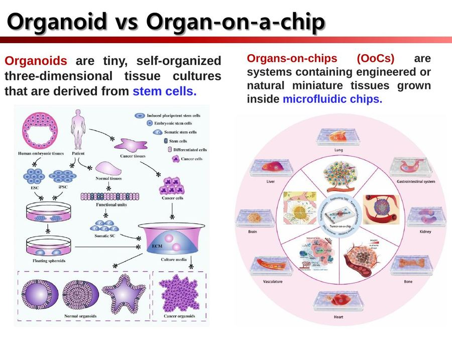
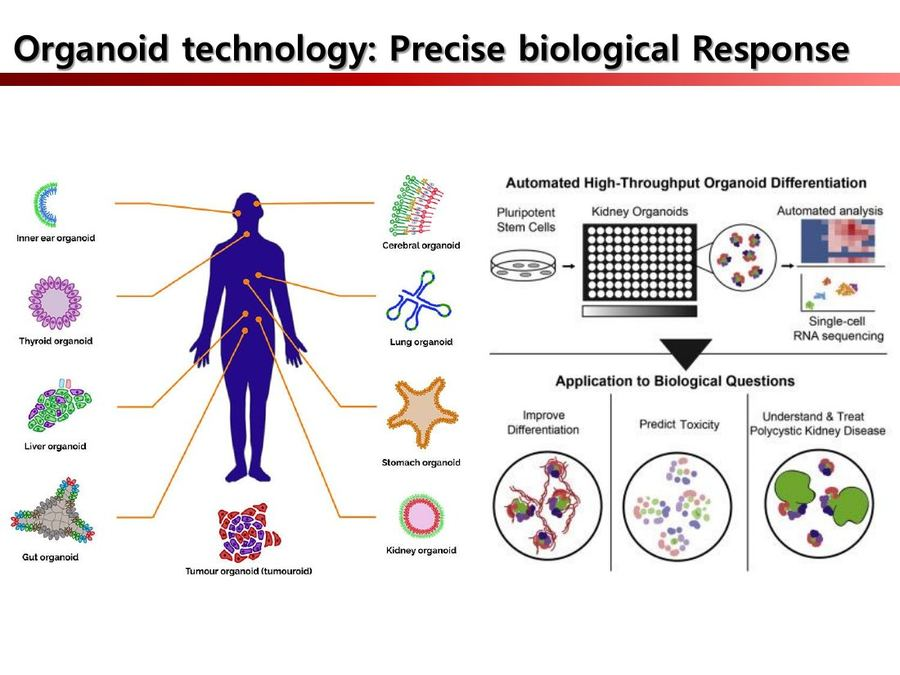
오가노이드 = 줄기세포에서 유래해 스스로 조직화한 작은 3차원 조직 배양체. Organ-on-a-chip(OoC) = 공학적으로 만든 또는 천연의 작은 조직을 미세유체(microfluidic) 칩 안에서 키운 시스템이야.
36
37 Organoid technology: Precise biological Response — 내이·갑상선·간·장·뇌·폐·위·신장·종양 오가노이드 / 자동화 고처리량 분화(신장 오가노이드) → 분화 개선·독성 예측·다낭성 신장질환 이해·치료
| 오가노이드 | Organ-on-a-chip | |
|---|---|---|
| 출발 | 줄기세포 | 공학적/천연 작은 조직 |
| 특징 | 스스로 조직화한 3D | 미세유체 칩에서 배양 |
| 강점 | 정밀한 생물학적 반응 | 미세생리 자극(흐름·압력) |
시험 포인트정의 짝을 바꾼 보기 주의:
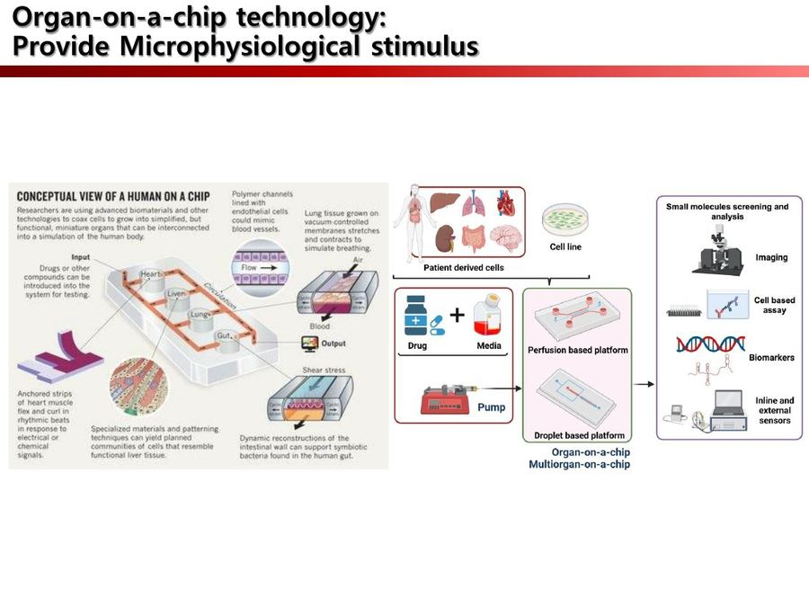
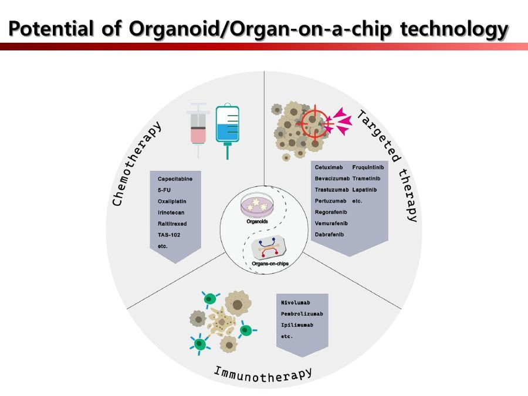
Organ-on-a-chip은 혈관처럼 흐르는 채널·늘어나는 막 등으로 미세생리 자극을 줘서, 장기 여러 개를 연결한 Human-on-a-chip까지 만들어. 환자 유래 세포로 약물 반응·독성을 평가해 화학요법·표적치료·면역치료 선택에 활용할 수 있어.
38 Organ-on-a-chip technology: Provide Microphysiological stimulus
39 Potential of Organoid/Organ-on-a-chip technology — 오가노이드·OoC로 화학요법(카페시타빈·5-FU 등), 표적치료(세툭시맙·베바시주맙 등), 면역치료(니볼루맙·펨브롤리주맙·이필리무맙 등) 반응 예측
미세생리 자극(microphysiological stimulus) = 그냥 접시 배양과 달리, 몸속처럼 액체가 흐르고(전단 응력) 조직이 늘어나는 환경을 주는 것. 그래서 사람 반응을 더 잘 흉내 내.
39번 그림의 약 이름들은 4주차 항암제 세대(화학 → 표적 → 면역)와 연결돼.
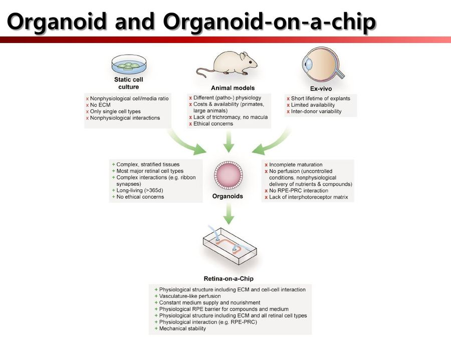
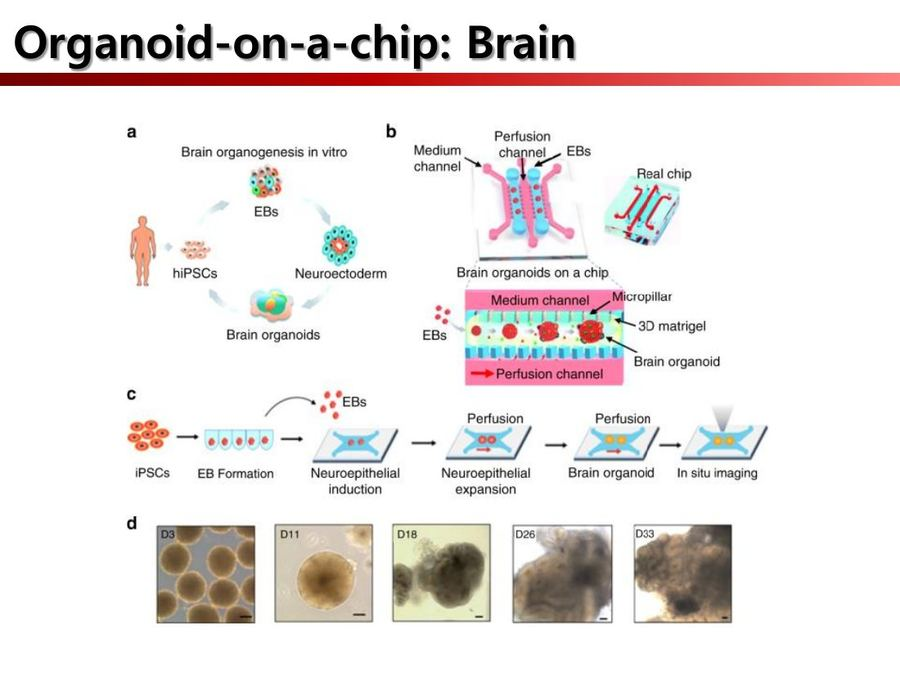
정적 세포 배양·동물 모델·체외 조직(ex vivo)은 각각 한계가 있고, 오가노이드도 성숙 불완전·관류 없음 같은 한계가 있어. 오가노이드를 칩에 넣어 관류(흐름)를 주면 생리적 구조·영양 공급이 좋아져 — 망막·뇌 오가노이드-온-칩이 예시야.
40 Organoid and Organoid-on-a-chip
41 Organoid-on-a-chip: Brain — 사람 iPSC → 배아체(EB) → 신경상피 → 뇌 오가노이드, 관류 채널이 있는 칩에서 키움(D3~D33)
| 모델 | 주요 한계 |
|---|---|
| 정적 배양 | ECM 없음 · 단일 세포 |
| 동물 모델 | 사람과 다른 생리 · 비용 · 윤리 |
| 오가노이드 | 성숙 불완전 · 관류 없음 |
| 오가노이드-온-칩 | → 관류·영양 공급으로 보완 |
시험 포인트오가노이드의 한계 =
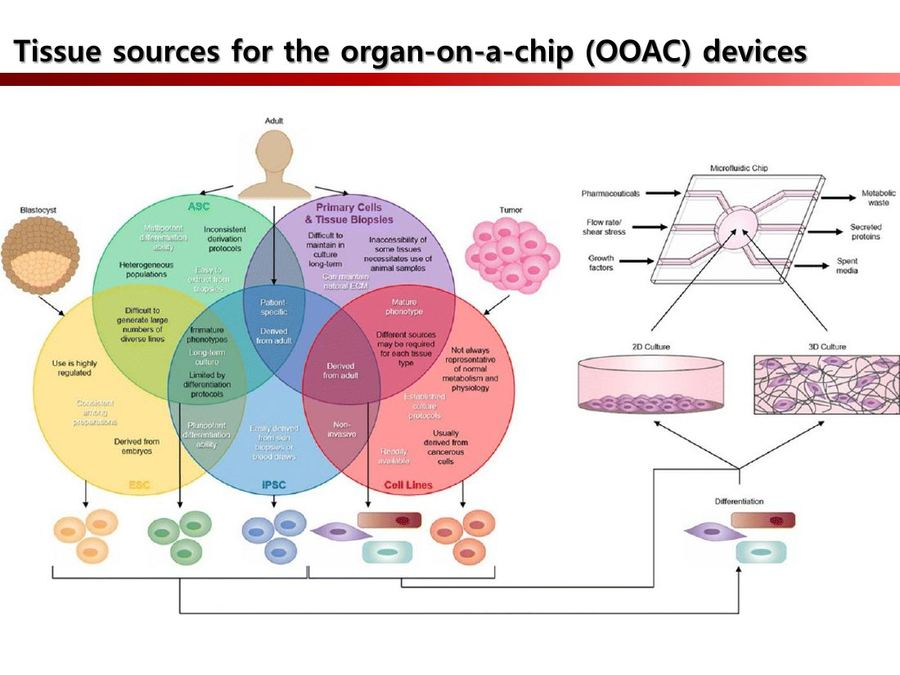
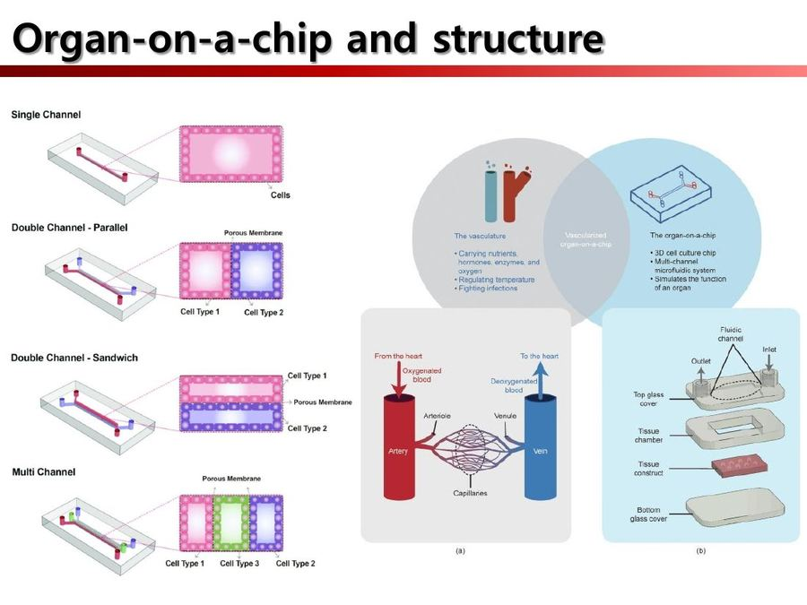
칩에 넣는 세포는 배아줄기세포(ESC)·성체줄기세포(ASC)·유도만능줄기세포(iPSC)·일차세포(조직 생검)·세포주가 있고 각각 장단점이 있어. 칩 구조는 단일 채널부터 다공성 막으로 나눈 이중(평행·샌드위치)·다중 채널까지 있어.
42 Tissue sources for OOAC devices
43 Organ-on-a-chip and structure
줄기세포 약어를 정리해 둬:
| 약어 | 뜻 |
|---|---|
| ESC | Embryonic stem cell, 배아줄기세포 |
| ASC | Adult stem cell, 성체줄기세포 |
| iPSC | induced Pluripotent Stem Cell, 유도만능줄기세포 |
이중 채널(샌드위치)은 다공성 막으로 두 세포층을 나눠, 장벽(예: 혈관-조직)을 흉내 내.
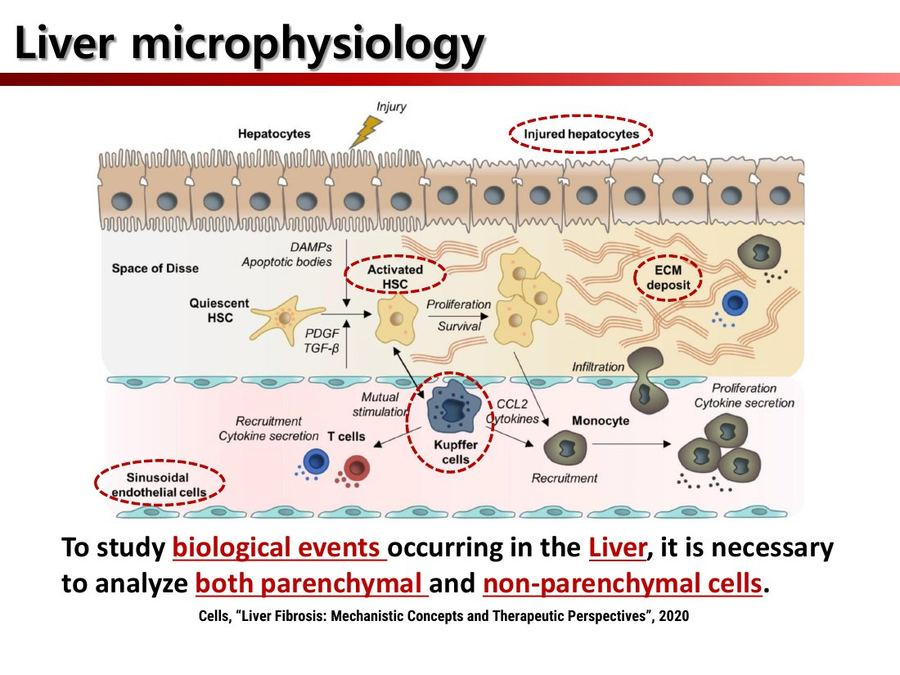
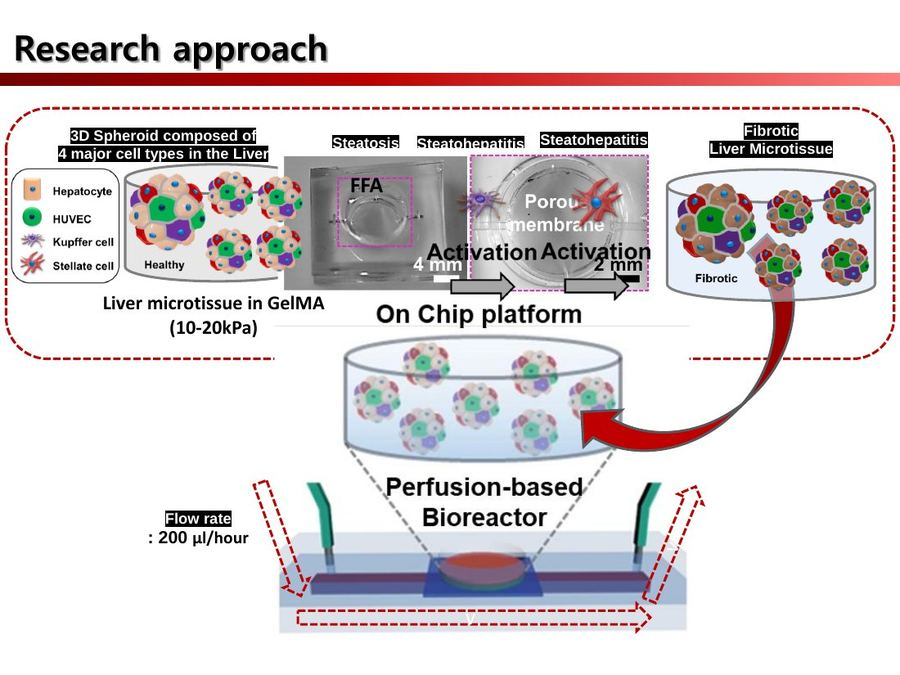
간에서 일어나는 일을 연구하려면 실질세포(간세포)와 비실질세포를 함께 봐야 해. 그래서 간의 주요 4세포(간세포·HUVEC·쿠퍼세포·성상세포)로 3D 구형체를 만들어 GelMA(10~20 kPa)에 넣고, 유리지방산(FFA)으로 지방간 → 지방간염 → 섬유화를 단계적으로 유도해. 관류형 칩(유속 200 μl/시간)에서 배양해.
44 Liver microphysiology — 손상된 간세포 → DAMPs → 성상세포(HSC) 활성화·ECM 침착, 쿠퍼세포·단핵구·T세포·혈관 내피세포 상호작용
“간의 생물학적 현상을 연구하려면 실질세포와 비실질세포를 모두 분석해야 한다.” (Cells 2020)
45·46 Research approach (HJ Cho & H-J Kim et al., Small 2021)
| 세포 | 역할 |
|---|---|
| 간세포(HepaRG) | 실질세포 · 알부민 분비 등 간 기능 |
| HUVEC | 혈관 내피 |
| 쿠퍼세포 | 간의 대식세포 · 염증 |
| 성상세포(HSC) | 활성화되면 섬유화(ECM 침착) |
교수님 연구실 논문이야. 12주차 녹취에서 말한 “대사질환·간 칩” 연구가 이거야.
시험 포인트간 칩 =
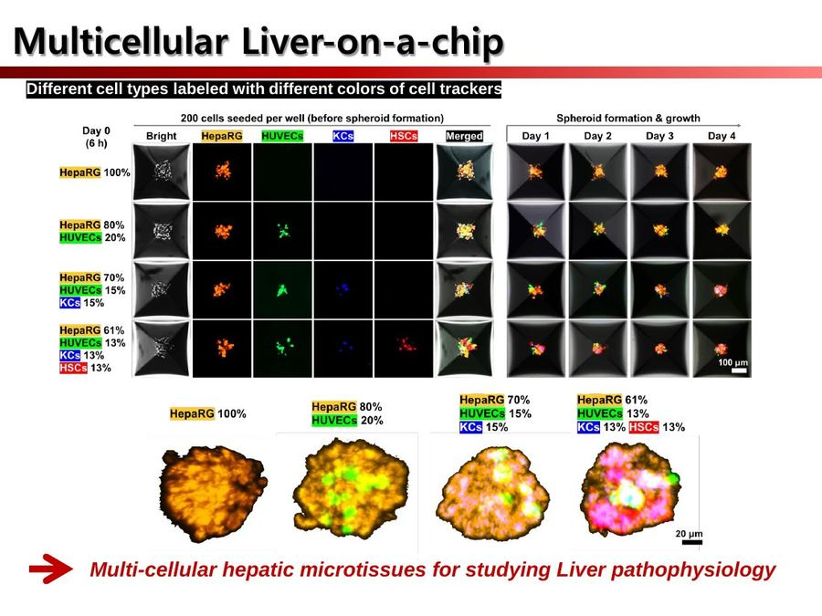
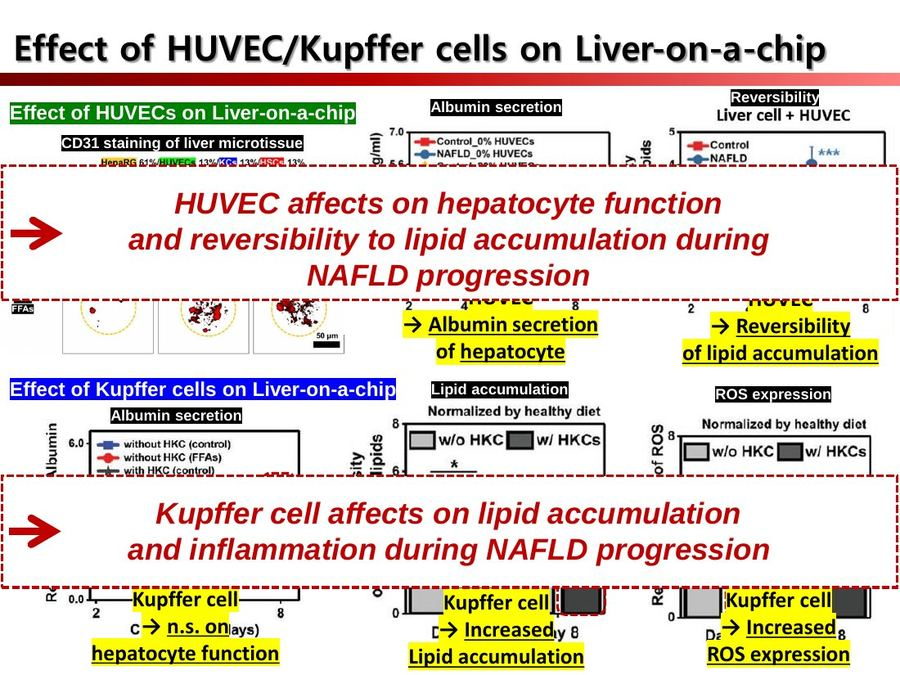
세포마다 다른 색으로 표지해 다세포 간 미세조직을 만들었어. HUVEC은 간세포의 알부민 분비를 늘리고 지질 축적을 되돌리는(가역성) 데 기여했고, 쿠퍼세포는 간세포 기능엔 유의한 영향이 없었지만 지질 축적과 ROS(염증)를 늘렸어.
47 Multicellular Liver-on-a-chip — HepaRG·HUVEC·쿠퍼세포·성상세포를 비율별(100% → 61:13:13:13)로 섞어 구형체 형성(Day 1~4) → 간 병태생리 연구용 다세포 미세조직
48·49 Effect of HUVEC/Kupffer cells
| 세포 | 간세포 기능 | 지질 축적 | 염증(ROS) |
|---|---|---|---|
| HUVEC | 알부민↑ | 가역성↑ | — |
| 쿠퍼세포 | n.s. | ↑ | ↑ |
NAFLD = 비알코올성 지방간 질환. 세포 하나만 넣으면 이런 상호작용을 볼 수 없어서 다세포 칩이 필요해.
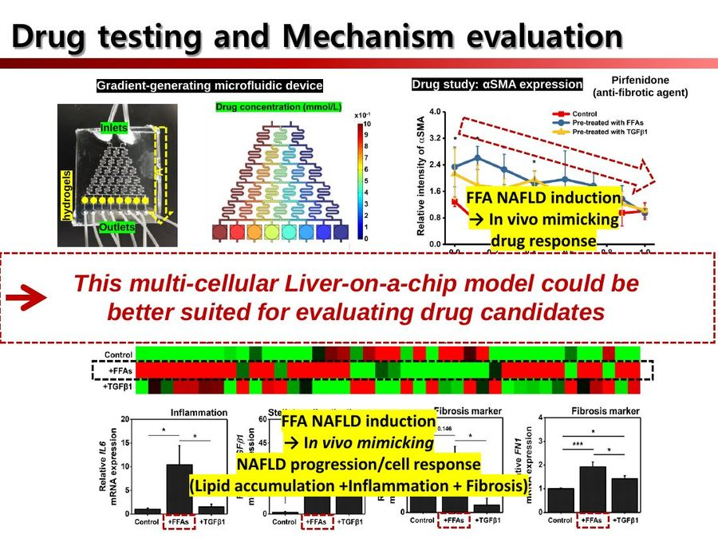
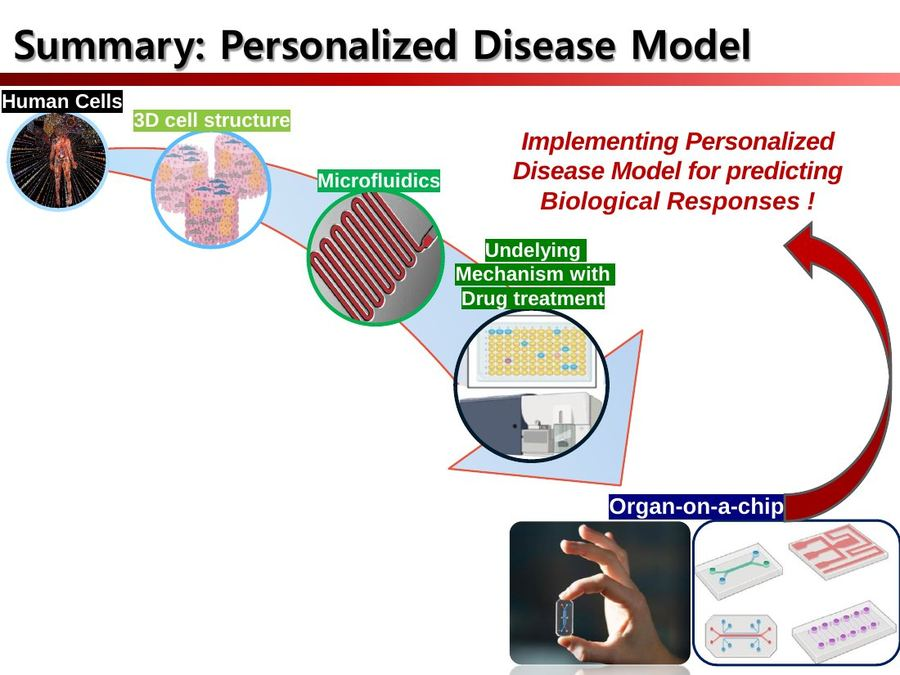
성상세포는 지질 축적·염증(IL-6)·섬유화(TGF-β)에 모두 영향을 줬어. 농도 기울기 칩으로 항섬유화제 피르페니돈을 시험하니, FFA로 유도한 모델이 생체와 비슷한 약물 반응을 보였어 → 이 다세포 간 칩은 후보물질 평가에 더 적합해. 결론: 사람 세포 + 3D 구조 + 미세유체 = 개인 맞춤 질환 모델.
50 Effects of Stellate Cells (HSCs) — 성상세포 → 지질 축적 · 염증(IL-6 분비) · 섬유화(TGF-β)
“성상세포는 NAFLD 진행 중 지질 축적, 염증, 섬유화에 영향을 준다”
51 Drug testing and Mechanism evaluation
52 Summary: Personalized Disease Model — 사람 세포 → 3D 세포 구조 → 미세유체 → 약물 처리에 따른 기전 → Organ-on-a-chip
세 세포 정리 (48~50쪽):
| 세포 | NAFLD에서 영향 |
|---|---|
| HUVEC | 간세포 기능 · 지질 가역성 |
| 쿠퍼세포 | 지질 축적 · 염증 |
| 성상세포 | 지질 축적 · 염증 · 섬유화 |
결론Organ-on-a-chip =